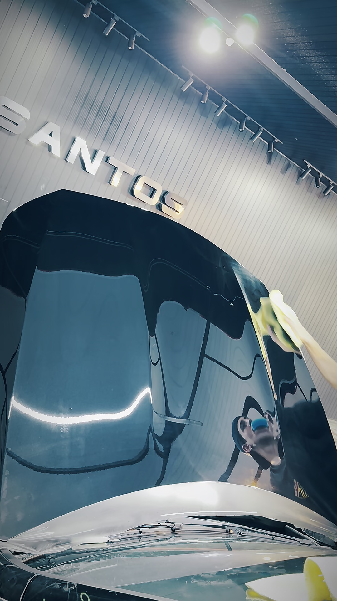
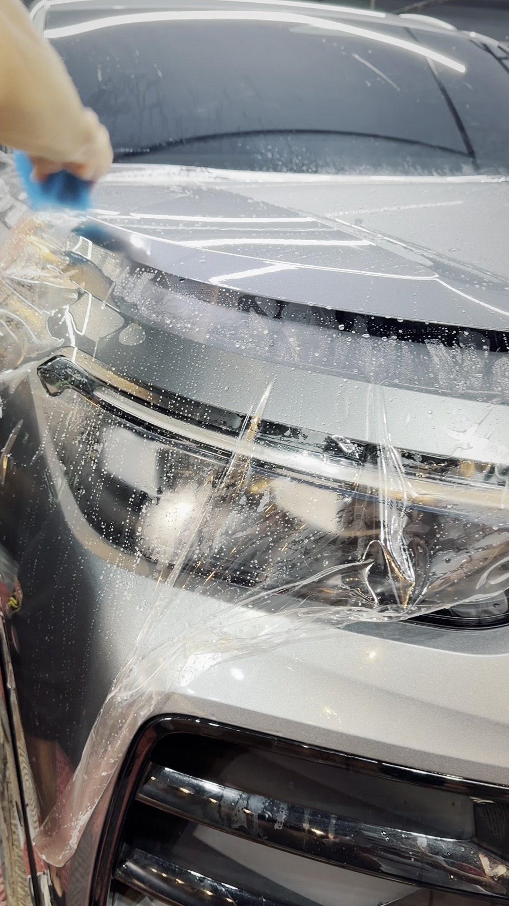
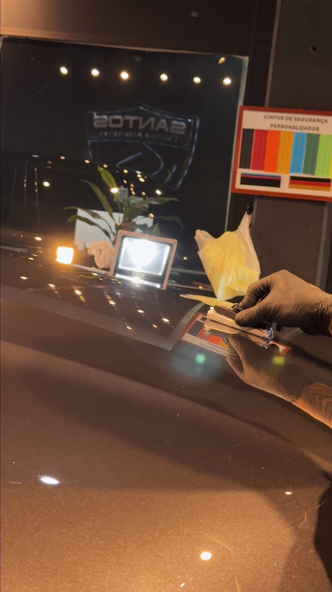

01
Película PPF
Filme transparente por cima da pintura de fábrica. A pedra de estrada e o inseto batem no filme — não no capô. Frontal ou carro completo.
Frontal · CompletoLimeira / SP · há mais de 10 anos
PPF, vitrificação e polimento técnico. Mais de mil carros passaram por aqui — do Tiguan à Porsche. O padrão é o mesmo nos dois.

O que fazemos
Da lavagem que traz você aqui ao PPF que fica anos no carro.
Filme transparente por cima da pintura de fábrica. A pedra de estrada e o inseto batem no filme — não no capô. Frontal ou carro completo.
Frontal · CompletoCoating cerâmico Kisho SI-701. Realça a cor da pintura e traz o efeito espelhado — aquele que devolve o reflexo inteiro.
Kisho SI-701Correção da pintura antes de qualquer proteção. É o passo que ninguém vê e que decide o resultado de todos os outros.
Da básica à premium. É por onde a maioria conhece a casa — e por onde dá pra ver o cuidado antes de fechar qualquer coisa maior.
Hidratação e proteção de couro. O interior envelhece junto com a pintura, e quase sempre é esquecido.
Profissional dedicado só pra isso na equipe. O que não dá pra corrigir no polimento, resolve aqui.
Proteção de pintura
O PPF é uma película transparente aplicada sobre a pintura original. Ela leva o impacto que iria pro capô: pedrisco de estrada, inseto, risco de lavagem malfeita.


Coating cerâmico
Coating cerâmico japonês. Não é cera, não sai na primeira lavagem. Sela a pintura, realça a cor e deixa o reflexo que você vê na foto aí do lado — sem filtro, sem retoque.
A casa
Mais de dez anos em Limeira e mais de mil carros. Não é a casa que abriu ano passado surfando a onda do PPF — é onde a cidade traz carro desde antes disso virar moda.

Trabalho
Bora?
Manda uma foto do carro no WhatsApp e diz o que você quer fazer. A gente avalia e te retorna.
Chamar no WhatsApp